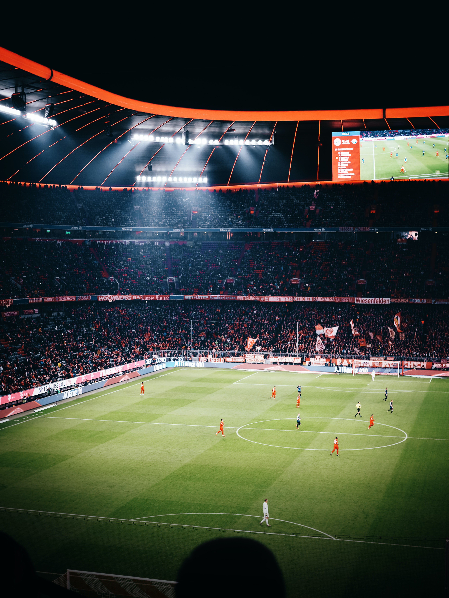

Interests
Buiten school heb ik nog als hobby of eigenlijk beter gezegd mijn passie, voetbal. Ik speel dit al van sinds ik 5 jaar was. Ik speelde altijd in de dorpsclub RDZoutleeuw. Op 18 jarige leeftijd ben ik het iets verder gaan zoeken, in Halle-Booienhoven bij Halle VV. Hier speel ik tot het heden nogsteeds. Ik kijk ook heel graag voetbal. Dit is allemaal wat gekomen door mijn papa, omdat hij ook altijd voetballer was en daarna was hij ook mijn hele jeugd mijn trainer.
